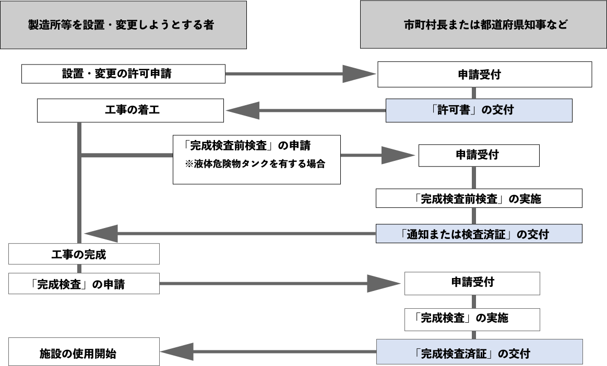

設置と変更の許可
製造所・貯蔵所・取扱所を新しく設置するときは、施設の種類（区分）に応じて 市区町村などの行政機関に申請し、 許可（許可書の交付）を受けなければなりません。 また、すでにある製造所等でも位置・構造・設備を変えるときは、 同じく変更の許可が必要です。
例えば、危険物の取扱量を増やすことで 保有空地の面積を広げる必要が出る場合なども、 変更許可の対象になります。
許可を出す市区町村等は、申請された施設の 位置・構造・設備が技術上の基準に適合しているか、 そして貯蔵・取扱いが公共の安全に支障を及ぼさないかを確認し、 基準を満たしていれば許可を与えなければなりません（義務）。
ここでいう「市町村長等」とは、 市町村長・都道府県知事・総務大臣のいずれかを指し、 どの機関が許可権者になるかは製造所等の設置される場所によって決まります。
製造所等の設置と変更の申請先
補足コラム
変更許可を申請するときは、変更内容を示す図面や、 規則で定められた書類などを添えて提出する必要があります。
出る出るポイント!
- 製造所等：消防本部・消防署あり → 市町村長、なし → 都道府県知事
- 移送取扱所：1つの市町村の区域 → 市町村長、2市町村以上 or 消防本部・消防署なし → 都道府県知事
- 区域が2つ以上の都道府県にまたがる移送取扱所 → 総務大臣
ひっかけ注意!
- 「消防本部・消防署がない市町村なのに市町村長」と書いてあったら✕。
- 「2つ以上の市町村にまたがるのに市町村長」も✕。ここは都道府県知事だよ。
- 「2つ以上の都道府県にまたがるのに都道府県知事」となっていたら、正しくは総務大臣。
完成検査と仮使用の承認
製造所などの設置または変更の許可を受けた者は、工事が完了したときに 市町村長等による完成検査を受けなければなりません。 この検査で施設が技術上の基準に適合していると認められてからでないと、 使用を開始することはできません。
ただし、位置・構造・設備の変更工事の対象となっていない部分については、 市町村長等の承認（仮使用承認）を受ければ、 完成検査前でも使用を開始することができます。
※仮使用承認があれば、施設全体の工事が終わっていなくても、 安全が確保された部分だけ営業を続けられるようになります。
完成検査の結果、製造所等が定められた技術上の基準を満たしていると認められた場合、 市町村長等は完成検査済証を交付します。
なお、変更許可申請と仮使用承認の申請は同時に行うことも可能です。
出る出るポイント！
- 工事完了 → 完成検査 → 適合なら完成検査済証交付、の流れをセットで押さえる。
- 仮使用承認を受ければ、工事対象外で安全な部分だけは完成検査前でも使用開始OK。
- 変更許可申請と仮使用承認は同時申請もできる（別々にしか出せない、は誤り）。
ひっかけ注意！
- 「完成検査前でも、判断して営業再開してよい」→ ✕ 仮使用承認を受けた部分だけ使用できる。
- 「技術上の基準を満たしていれば、検査前でも使える」→ ✕ 実際に完成検査で適合と認められてから使用開始。
- 「仮使用承認は、変更許可とは別にあとからしか申請できない」→ ✕ 変更許可申請と同時に出せるのがポイント。
完成検査前検査
液体の危険物を貯蔵または取り扱う タンク（以下「液体危険物タンク」）を設置または変更する場合には、 製造所等の完成検査を受ける前に、 市町村長等が実施する「完成検査前検査」を受ける必要があります。
完成検査前検査では、工事の完了後には確認できなくなるタンク内部の構造などが対象です。 特に、塗装や配管などを取り付けてしまうと内部が見えなくなるため、 その前の段階で検査しておくことが求められます。
施設と検査の種類
出る出るポイント！
- 完成検査前検査の対象は液体危険物タンク＋完成検査の前に市町村長等が実施。
- 検査内容は、工事完了後には見えなくなるタンク内部構造など。
- 対象施設は「製造所・一般取扱所・各種タンク貯蔵所・移動タンク貯蔵所・給油取扱所」などの液体危険物タンクを持つ施設。
- 検査の種類は
- すべての液体危険物タンク：水張検査または水圧検査
- 1000kL以上の屋外タンク貯蔵所：＋基礎・地盤検査＋溶接部検査
ひっかけ注意！
- 指定数量未満の液体危険物タンクは完成検査前検査の対象外（「すべてのタンクが対象」だと誤り）。
- 1000Lではなく1000kL以上の屋外タンク貯蔵所が追加検査の対象。単位と「屋外」もセットで覚える。
- 完成検査前検査は完成検査の前に行う。順番をひっくり返した文章に注意。
- 検査主体は市町村長等。選択肢で「消防署長だけ」「事業者が自主検査すればよい」などと書かれていたら誤り。
申請から使用開始までのフロー

※ 完成検査前検査で技術基準に適合していると認められた項目は、完成検査を省略できます。
出る出るポイント
- 設置・変更の許可 → 工事 → 完成検査 → 使用開始が基本の流れ。 許可を受けただけでは、まだ使用できない。
- 位置・構造・設備の変更工事でも、 安全が確保された部分は 仮使用承認を受ければ 完成検査前に使用開始・営業継続が可能。
- 液体危険物タンクは 完成検査前検査が必要。 この検査で技術上の基準に適合と認められた項目は 完成検査を省略できる。
ひっかけ注意
- 「許可を受けたらそのまま使用開始できる」と書いてあれば誤り。 必ず完成検査を受けてから。
- 仮使用承認と完成検査前検査は別物。 「仮使用承認を受ければ完成検査を省略できる」とあればNG。
- 完成検査を省略できるのは、 完成検査前検査で適合とされた“項目部分”だけ。 「施設全体の完成検査が不要になる」と書いてあればひっかけ。